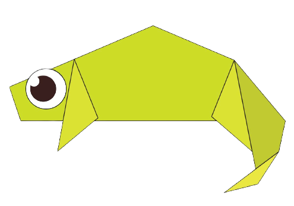
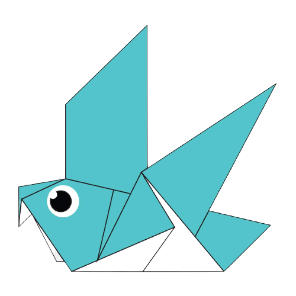

Interesting facts about Camels
- Camels have thick lips which let them forage for thorny plants other animals can't eat.
- Camels have three sets of eyelids and two rows of eyelashes to keep sand out of their eyes.
- There are two types of camels: One humped or “dromedary” camels and two humped Bactrian camels.

Interesting facts about Chameleons
- Their feet work like salad tongs.
- Almost half of all known species live in Madagascar.
- Skin crystals enable them to change colour at will.

Interesting facts about Pigeons
- Pigeons are incredibly complex and intelligent animals.
- Pigeons are highly sociable animals.
- Pigeons are renowned for their outstanding navigational abilities.